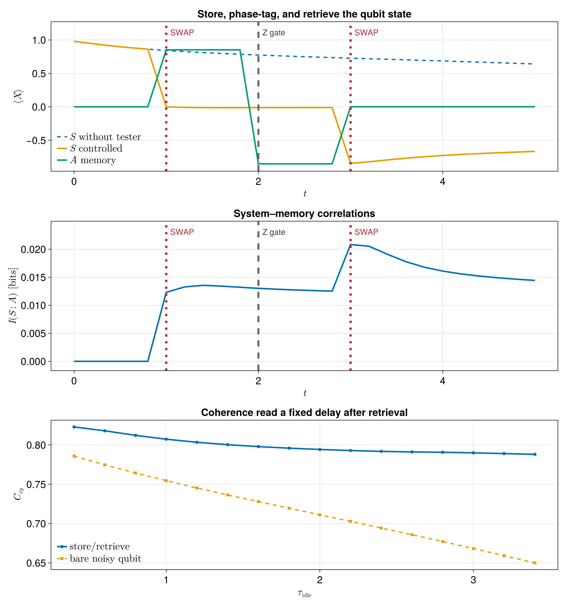

Noisy quantum circuits with a memory-bearing tester
Noise in a quantum circuit does not have to forget what happened one gate ago. A coherent defect can keep ringing, a neighbouring degree of freedom can remain correlated with the computational qubit, leakage can survive between control pulses, and a structured environment can carry information from one circuit time to the next. In all of these cases the error at the next gate is allowed to depend on the history of earlier interventions.
That is exactly the regime where process tensors become useful. Rather than assigning an independent noise channel to every circuit layer, a process tensor stores the multi-time response of the noisy hardware. This connection is already important in quantum-computing theory: Figueroa-Romero et al. formulate randomized benchmarking in the presence of temporally correlated noise using the process-tensor framework (PRX Quantum 2, 040351 (2021)). Gandhari and Gullans make the connection even more concrete by studying qubit gates interspersed with interactions with a multimode bosonic bath (Phys. Rev. Research 8, 023075 (2026)).
We use that idea as a motivation to demonstrate a toy model for a noisy circuit wire. Characterising the non-Markovianity of noise in a quantum hardware is already an open problem. So, in this example, we take a simple case where we assume the noise comes from a thermal bosonic environment. We compress that environment into a reusable process tensor with ACE and use it to study the performance of our noisy circuit.
Now suppose we probe the noisy processor qubit $Q$ repeatedly using the same ancillary qubit $A$. The ancilla survives between interventions, so information acquired at one time can influence what happens later. The probing sequence is therefore no longer a product of independent time-local instruments: it is a memory-bearing multi-time instrument, or tester. Memory-assisted quantum testers have an operational role in the theory of channels with memory; see Chiribella, D'Ariano and Perinotti (Phys. Rev. Lett. 101, 180501 (2008)).
Our circuit is deliberately tiny:
noisy process on Q
┌────┐ ┌────┐ ┌────┐
Q : |+> ─────┤ PT ├── ... ───┤SWAP├── PT ── PT ── ... ┤SWAP├── PT ── ...
└────┘ └─┬──┘ └─┬──┘
│ │
A : |0> ───────────────────────┴────── Z ────────────────┴────────────
store phase-tag retrieveOnly $Q$ sees the bosonic environment. The first SWAP parks the logical qubit state in $A$. A $Z$ gate phase-tags the stored state while it is outside the noisy wire. The second SWAP returns it to $Q$. The main question we want to answer is:
Can a coherent ancilla store, manipulate, and return quantum information while the physical processor qubit remains embedded in a noisy process with memory?
The executable documentation uses a deliberately small bath. A larger ACE calculation, an idle-time sweep, and the staged figure are generated by scripts/noisy_quantum_circuit_tester.jl.
The three observables to measure during the experiment
Before building anything, it helps to know what we actually want to measure.
1. Where is the phase information? We prepare $Q$ in $|+\rangle$, so initially $\langle X_Q\rangle=1$. A SWAP should move this signal from $Q$ to $A$ and later bring it back. We therefore follow both $\langle X_Q\rangle$ and $\langle X_A\rangle$.
2. How much coherence survives? $\langle X\rangle$ alone is not a fair measure after the $Z$ gate: a perfectly coherent qubit can rotate from $|+\rangle$ to $|-\rangle$ and merely flip the sign of $\langle X\rangle$. We therefore use
\[C_{xy}=\sqrt{\langle X\rangle^2+\langle Y\rangle^2}.\]
A coherent phase operation can rotate the Bloch vector without reducing $C_{xy}$; genuine dephasing shrinks it.
3. Are $Q$ and $A$ actually correlated? Local observables cannot answer this. For the joint trajectory we use the quantum mutual information
\[I(Q{:}A)=S(\rho_Q)+S(\rho_A)-S(\rho_{QA}),\]
with $S(\rho)=-\mathrm{Tr}[\rho\log_2\rho]$. Mutual information counts all correlations, classical and quantum.
using LinearAlgebra
using Logging
using Printf
using ITensors
using ITensors.Ops: Trotter
using ProcessTensors
function density_matrix(state)
pairs = siteinds(state)
physical_sites = Index[
only(filter(index -> plev(index) == 0, pair))
for pair in pairs
]
tensor = foldl(*, state)
dimension = prod(dim.(physical_sites))
return reshape(
ComplexF64.(Array(
tensor,
prime.(physical_sites)...,
physical_sites...,
)),
dimension,
dimension,
)
end
function operator_matrix(name::AbstractString, site::Index)
return ComplexF64.(Array(op(name, site), prime(site), site))
end
expectation(rho, operator) = real(tr(operator * rho) / tr(rho))
function entropy_bits(rho)
normalized = (rho + rho') / (2real(tr(rho)))
probabilities = clamp.(real.(eigvals(Hermitian(normalized))), 0, Inf)
probabilities ./= sum(probabilities)
return -sum(p * log2(p) for p in probabilities if p > eps(Float64))
end
mutual_information(rho_Q, rho_A, rho_QA) =
entropy_bits(rho_Q) + entropy_bits(rho_A) - entropy_bits(rho_QA)mutual_information (generic function with 1 method)Turn a microscopic bath into a noisy circuit process
We choose the pure-dephasing spin-boson model
\[H_B=\sum_k\omega_k b_k^\dagger b_k, \qquad H_{QB}=Z_Q\sum_k g_k(b_k+b_k^\dagger).\]
There is no free Hamiltonian on $Q$. Without the bath, $|+\rangle_Q$ would therefore sit still forever. Any decay or revival of its transverse coherence is generated by the environment.
The oscillator couplings are summarized by the Ohmic spectral density
\[J(\omega)=2\alpha\,\omega\,e^{-\omega/\omega_c}.\]
$\alpha$ sets the overall coupling, while $\omega_c$ suppresses modes far above the characteristic bath frequency scale. At low frequency the Ohmic spectrum grows linearly with $\omega$.
A finite simulation replaces the continuum by frequency bins. For midpoint frequencies $\omega_k$ and bin width $\Delta\omega$, we choose
\[g_k^2\simeq J(\omega_k)\Delta\omega.\]
The coupling constants below are therefore discretized samples of one smooth environment rather than four unrelated fitting parameters.
const N_bath = 4
const local_dim = 3
const alpha = 0.008
const omega_cutoff = 4.0
const omega_max = 20.020.0Temperature is quoted in the natural frequency unit k_B T / ħ. The companion script uses 2.5, which gives the lowest-frequency mode on this coarse grid a visible thermal occupation while the higher modes become progressively colder.
const thermal_frequency = 2.5
const dt = 0.15
const nsteps = 14
const ace_cutoff = 1e-5
const ace_maxdim = 64
frequency_spacing = omega_max / N_bath
frequencies = [(k - 0.5) * frequency_spacing for k in 1:N_bath]
spectral_weights = 2alpha .* frequencies .* exp.(-frequencies ./ omega_cutoff)
couplings = sqrt.(spectral_weights .* frequency_spacing)4-element Vector{Float64}:
0.3271884559451908
0.3033364140800723
0.20961138715109784
0.13275315114680933Four modes and three local Fock states are intentionally under-resolved. They are enough to produce a structured finite-memory process while keeping the documentation build quick. With this grid, the lowest mode has ω1 = kB T / ħ, so its thermal occupation is appreciable; the higher modes are much closer to their ground states. The companion script is the place for larger mode counts, boson cutoffs, and convergence checks.
processor_sites = siteinds("Qubit", 1)
processor = qubit_system(processor_sites)
rho_Q0 = to_dm(MPS(processor_sites, ["+"]))
bath_sites = siteinds("Boson", N_bath; dim=local_dim)
bath_liouville_sites = liouv_sites(bath_sites)4-element Vector{ITensors.Index{Int64}}:
(dim=9|id=314|"Liouv,Site,n=1,ptype=Boson")
(dim=9|id=689|"Liouv,Site,n=2,ptype=Boson")
(dim=9|id=334|"Liouv,Site,n=3,ptype=Boson")
(dim=9|id=199|"Liouv,Site,n=4,ptype=Boson")Each BosonicMode supplies one microscopic piece of the environment: H_mode gives ωk b†b, `rhomodegives the truncated Gibbs state, andHcoupling` gives gk(b+b†)Z_Q. In the local OpSum, site 1 is the oscillator and site 2 is the processor qubit.
modes = [
let
omega = frequencies[k]
coupling = couplings[k]
occupations = 0:(local_dim - 1)
thermal_weights = exp.(-omega .* occupations ./ thermal_frequency)
thermal_weights ./= sum(thermal_weights)
number_states = [
MPS([bath_sites[k]], [string(n)])
for n in occupations
]
rho_mode = to_liouville(
to_dm(number_states; coeffs=thermal_weights);
sites=[bath_liouville_sites[k]],
)
H_mode = OpSum() + (omega, "N", 1)
H_coupling = OpSum()
H_coupling += coupling, "A", 1, "Z", 2
H_coupling += coupling, "Adag", 1, "Z", 2
bosonic_mode(
[bath_liouville_sites[k]],
H_mode,
rho_mode;
coupling=H_coupling,
)
end for k in 1:N_bath
]
bath = with_logger(NullLogger()) do
bosonic_bath(modes)
endProcessTensors.BosonicBath
modes: 4
space: Liouville
site dims: 9, 9, 9, 9
bath Liouville dimension: 6561
mode summary:
[1] BosonicMode(dim=9, H_terms=1, coupling_terms=2, n_max=8)
[2] BosonicMode(dim=9, H_terms=1, coupling_terms=2, n_max=8)
[3] BosonicMode(dim=9, H_terms=1, coupling_terms=2, n_max=8)
[4] BosonicMode(dim=9, H_terms=1, coupling_terms=2, n_max=8)
Compress the bath memory with ACE
This is the one heavy-looking constructor block, so it is worth saying what it buys us. Direct propagation of $Q$ together with all oscillators grows exponentially with the number of bath modes. ACE instead adds their influences one at a time and compresses the temporal memory bonds between process-tensor cores.
Everything above is microscopic input. The call below turns it into the object we actually want:
\[\boxed{\text{thermal spin-boson noise}\longrightarrow \text{reusable noisy circuit process}}.\]
The implementation follows the ACE construction of Cygorek and Gauger (J. Chem. Phys. 161, 074111 (2024)). Once process_tensor exists, changing the tester circuit does not rebuild the bosonic bath.
build_seconds = @elapsed begin
process_tensor = build_process_tensor(
processor;
method=ACE(cutoff=ace_cutoff, maxdim=ace_maxdim),
environment=bath,
dt,
nsteps,
sys_alg=Trotter{2}(),
combine_alg=Trotter{2}(),
progress=false,
)
end
println(process_tensor)
@printf(
"ACE build: %.3f s, maximum PT bond dimension: %d\n",
build_seconds,
maxlinkdim(process_tensor),
)14-step ProcessTensor{QubitSystem, BosonicBath} | dt=0.15 | t_final=2.1 | maxlinkdim=39
system: QubitSystem(nsites=1, dissipative=false)
environment: BosonicBath(nmodes=4, D_bath=6561, coupling=true)
core: MPO{Liouville}(length=14, linkdims=[4, 13, 21, …, 3])
ACE build: 2.536 s, maximum PT bond dimension: 39
First run the processor with no ancilla. This is the noisy reference circuit.
baseline = evolve(process_tensor, rho_Q0; progress=false)
for (name, value) in pairs(baseline)
@printf("%s: %d snapshots of %s\n", name, length(value), eltype(value))
endtimes: 14 snapshots of Float64
states_liouville: 14 snapshots of MPS{Liouville}
states_hilbert: 14 snapshots of MPO{Hilbert}
When does an ancilla become a tester?
Physically, $A$ is just another qubit. What makes it a tester memory is that the same quantum degree of freedom persists across several circuit times. Tester stores that ancillary state, while TesterSeq stores the operations performed on it and jointly on $Q⊗A$.
First attach $A$ and do nothing. An identity tester must be a spectator: merely adding the memory wire cannot alter the noisy process.
ancilla_sites = siteinds("Qubit", 1)
rho_A0 = to_dm(MPS(ancilla_sites, ["0"]))
tester_memory = tester(ancilla_sites, rho_A0)
spectator = evolve(
process_tensor,
rho_Q0;
tester=tester_memory,
progress=false,
)
for (name, value) in pairs(spectator)
@printf("%s: %d snapshots of %s\n", name, length(value), eltype(value))
end
X_Q = operator_matrix("X", only(processor_sites))
Y_Q = operator_matrix("Y", only(processor_sites))
X_A = operator_matrix("X", only(ancilla_sites))
Y_A = operator_matrix("Y", only(ancilla_sites))
x_baseline = [expectation(density_matrix(rho), X_Q) for rho in baseline.states_hilbert]
x_spectator = [expectation(density_matrix(rho), X_Q) for rho in spectator.states_hilbert]
spectator_error = maximum(abs.(x_spectator .- x_baseline))
@printf("identity tester max |Δ<X_Q>|: %.3e\n", spectator_error)
@assert spectator_error < 1e-8times: 14 snapshots of Float64
states_liouville: 14 snapshots of MPS{Liouville}
states_hilbert: 14 snapshots of MPO{Hilbert}
tester_states_liouville: 14 snapshots of MPS{Liouville}
tester_states_hilbert: 14 snapshots of MPO{Hilbert}
identity tester max |Δ<X_Q>|: 9.992e-16
Program the memory-assisted circuit
Now the tester gets a job:
- SWAP $Q$ and $A$ to store the logical state;
- apply $Z_A$ while the state is parked;
- SWAP again to retrieve it.
The $Z$ gate gives us a useful diagnostic. $\langle X_A\rangle$ should change sign while $C_{xy,A}$ remains approximately unchanged. That is the difference between coherent phase manipulation and decoherence.
store_step = 4
phase_step = 7
retrieve_step = 10
swap_gate = op("SWAP", only(processor_sites), only(ancilla_sites))
phase_gate = op("Z", only(ancilla_sites))
tester_seq = TesterSeq(nsteps=process_tensor.nsteps)
add!(
tester_seq,
joint_unitary(swap_gate, processor_sites, ancilla_sites),
store_step,
)
add!(
tester_seq,
tester_unitary(phase_gate, ancilla_sites),
phase_step,
)
add!(
tester_seq,
joint_unitary(swap_gate, processor_sites, ancilla_sites),
retrieve_step,
)TesterSeq(default=TesterIdentity, nsteps=14, 3 explicit entries)
tstep=4 => JointUnitary
tstep=7 => TesterUnitary
tstep=10 => JointUnitaryJoint controls are compiled symmetrically around their process-tensor slab, $G^{1/2}P_kG^{1/2}$, while tester-only gates act directly on the ancillary memory wire. The process tensor itself remains unchanged.
trajectory = evolve(
process_tensor,
rho_Q0;
tester=tester_memory,
tester_seq,
return_joint=true,
progress=false,
)
for (name, value) in pairs(trajectory)
@printf("%s: %d snapshots of %s\n", name, length(value), eltype(value))
endtimes: 14 snapshots of Float64
states_liouville: 14 snapshots of MPS{Liouville}
states_hilbert: 14 snapshots of MPO{Hilbert}
tester_states_liouville: 14 snapshots of MPS{Liouville}
tester_states_hilbert: 14 snapshots of MPO{Hilbert}
joint_states_liouville: 14 snapshots of MPS{Liouville}
joint_states_hilbert: 14 snapshots of MPO{Hilbert}
Follow the information, not just the qubits
The tester-aware trajectory gives $ρ_Q(t)$, $ρ_A(t)$, and, because we requested return_joint=true, $ρ_QA(t)$. We can now evaluate the three diagnostics introduced at the start.
rho_Q = density_matrix.(trajectory.states_hilbert)
rho_A = density_matrix.(trajectory.tester_states_hilbert)
rho_QA = density_matrix.(trajectory.joint_states_hilbert)
x_Q = [expectation(rho, X_Q) for rho in rho_Q]
y_Q = [expectation(rho, Y_Q) for rho in rho_Q]
x_A = [expectation(rho, X_A) for rho in rho_A]
y_A = [expectation(rho, Y_A) for rho in rho_A]
coherence_Q = sqrt.(x_Q .^ 2 .+ y_Q .^ 2)
coherence_A = sqrt.(x_A .^ 2 .+ y_A .^ 2)
information = [
mutual_information(rho_Q[k], rho_A[k], rho_QA[k])
for k in eachindex(trajectory.times)
]
@printf(
"after store: <X_Q>=%+.4f, <X_A>=%+.4f, C_A=%.4f\n",
x_Q[store_step], x_A[store_step], coherence_A[store_step],
)
@printf(
"after phase: <X_Q>=%+.4f, <X_A>=%+.4f, C_A=%.4f\n",
x_Q[phase_step], x_A[phase_step], coherence_A[phase_step],
)
@printf(
"after retrieve: <X_Q>=%+.4f, <X_A>=%+.4f, C_Q=%.4f\n",
x_Q[retrieve_step], x_A[retrieve_step], coherence_Q[retrieve_step],
)
@printf("maximum I(Q:A): %.4e bits\n", maximum(information))
@assert all(isfinite, x_Q)
@assert all(isfinite, x_A)
@assert all(isfinite, coherence_Q)
@assert all(isfinite, coherence_A)
@assert all(isfinite, information)
@assert minimum(information) > -1e-8after store: <X_Q>=+0.0000, <X_A>=+0.9100, C_A=0.9100
after phase: <X_Q>=-0.0107, <X_A>=-0.9100, C_A=0.9100
after retrieve: <X_Q>=-0.9306, <X_A>=+0.0010, C_Q=0.9307
maximum I(Q:A): 2.4933e-02 bits
Reading the result
The companion calculation produces the figure below.

The three panels answer the three questions we posed before writing any code.
Top — where is the phase information? The dashed curve is $Q$ left continuously in the noisy process, so $\langle X_Q\rangle$ decays. In the controlled circuit, the first SWAP moves the transverse signal from $Q$ to $A$. The $Z_A$ gate then flips the sign of $\langle X_A\rangle$ without destroying the state. The second SWAP returns that phase-tagged information to $Q$, after which the processor continues to decohere under the same bosonic process.
Middle — did the tester remain an independent spectator? No. The mutual information $I(Q{:}A)$ becomes nonzero during the joint protocol. This does not by itself certify entanglement, but it shows that the tester-aware experiment cannot be reconstructed from $ρ_Q$ and $ρ_A$ as independent states. The same ancilla has participated in more than one circuit time and carries correlations generated by that history.
Bottom — how much coherence do we recover? The companion script repeats the experiment for several idle durations. After retrieval it waits the same fixed readout delay and evaluates
\[C_{xy,Q}=\sqrt{\langle X_Q\rangle^2+\langle Y_Q\rangle^2}.\]
The bare reference spends the whole idle interval on the noisy processor qubit, so its coherence falls strongly with idle time. In the tester-assisted circuit the logical state spends most of that interval in the isolated ancilla, so considerably more coherence survives. The remaining idle-time dependence is what keeps this from being a noiseless SWAP cartoon: the bosonic process continues evolving while the logical state is parked elsewhere.
We do not interpret this curve as a universal non-Markovianity measure. It is a control observable generated by one memory-assisted probing protocol.
Why the process-tensor split matters
There are two kinds of memory in this example:
bath memory E : compressed once into the process tensor
control memory A : carried explicitly by the testerThey should not be rebuilt together whenever the circuit changes. The expensive ACE process tensor is reused unchanged while the SWAP times, ancillary gates, and idle duration are varied only through TesterSeq.
That separation is the point of the example: ProcessTensors.jl constructs a microscopic non-Markovian noise model once and then lets genuinely memory-bearing quantum circuits interrogate it.
The four-mode, three-level bath is intentionally a documentation-scale toy model. Quantitative conclusions require convergence in timestep, oscillator discretization, local boson cutoff, ACE threshold, and ACE bond dimension. The companion script performs a larger calculation, but it should still be treated as a demonstration rather than a hardware calibration.
- Temporally correlated circuit noise is naturally a multi-time problem, so a process tensor is a better object than unrelated noise channels.
- A thermal spin-boson bath gives a simple microscopic noisy-qubit model; ACE compresses it into one reusable temporal process.
- The same persistent ancilla participates in several interventions, so the SWAP–Z–SWAP sequence is a memory-bearing tester.
- $\langle X\rangle$ follows where phase information lives, $C_{xy}$ separates phase rotation from decoherence, and $I(Q{:}A)$ exposes correlations invisible in reduced trajectories.
- Bath memory belongs to the process tensor; controllable circuit memory belongs to the tester. Many control experiments can therefore reuse the same expensive noisy process.